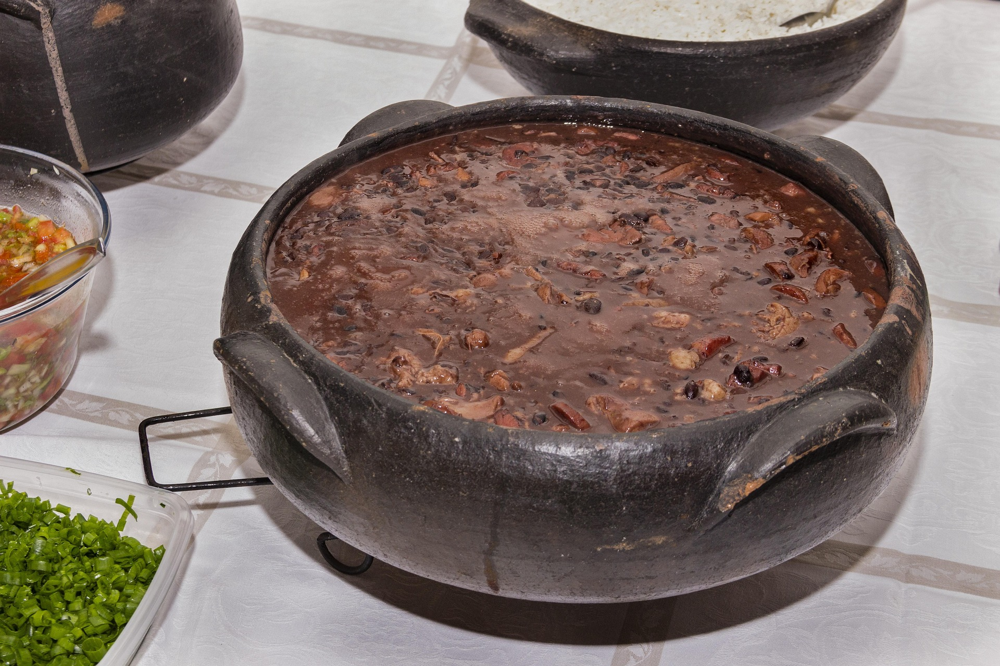
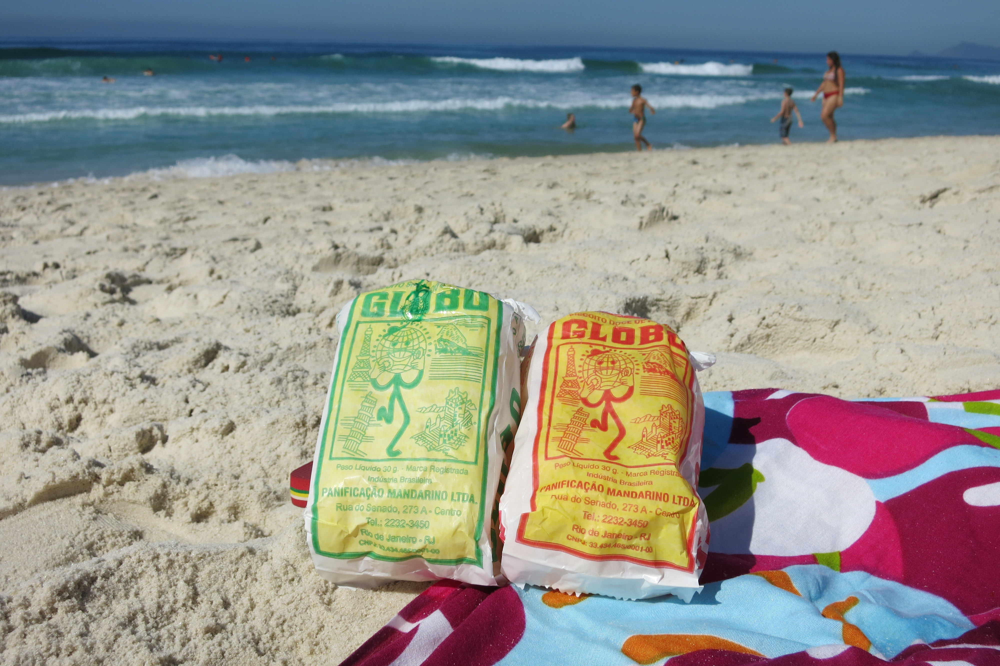
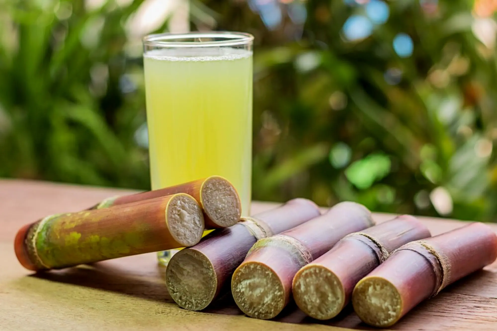

Sabores do Rio
Conheça os pratos típicos e as delícias da culinária carioca.
Feijoada
Prato tradicional servido com arroz, farofa e laranja.
Biscoito Globo
Clássico das praias cariocas. Imperdível!
Galeria de Sabores


